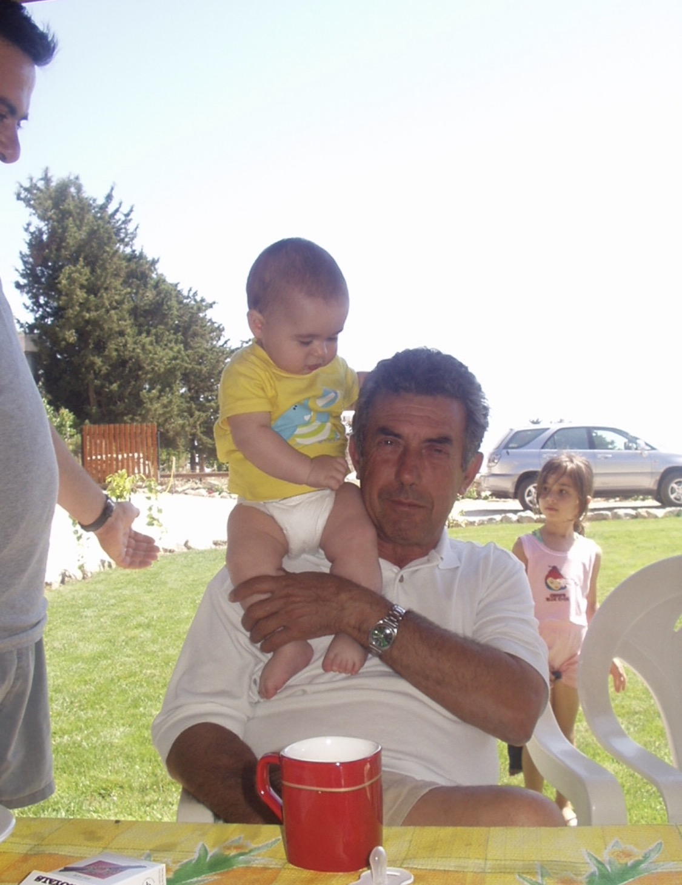
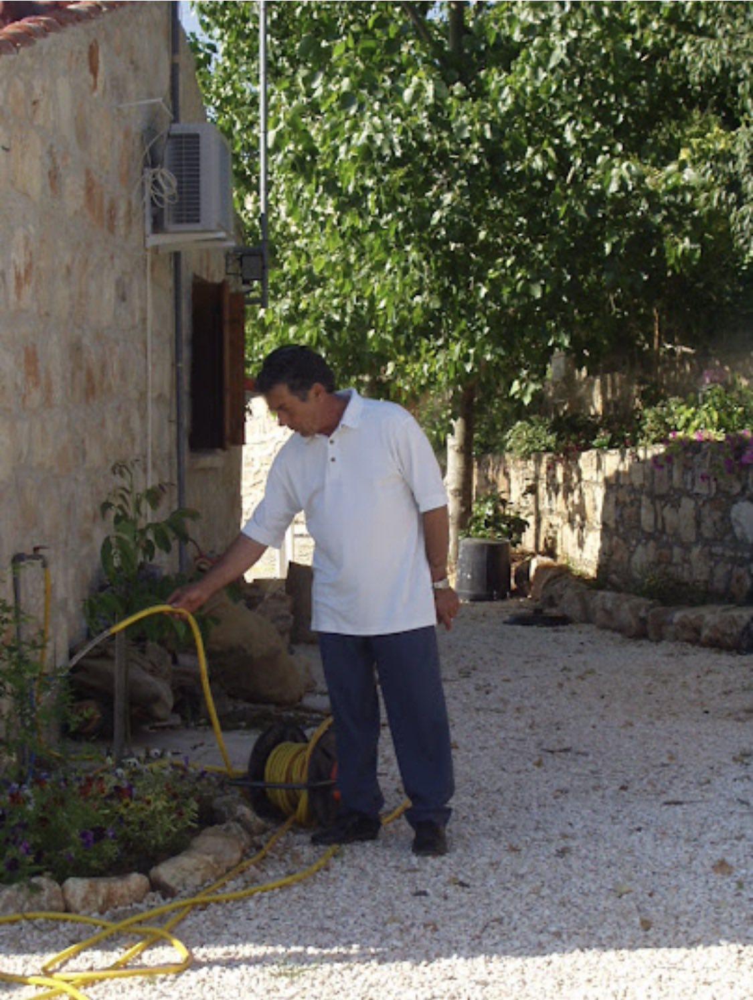
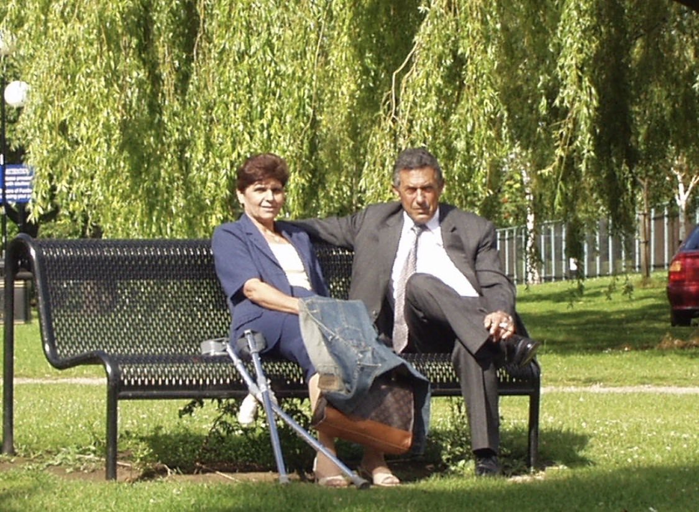

Petros Petrou
My hero
My hero

Petros Petrou was born in 1948 in Dikomo, a village in the Nicosia district of Cyprus. He was the first child of Thekla and Michalis, and the eldest of eight children. The family was poor, and from a young age Petros worked hard to help his parents and his younger brothers and sisters. That sense of responsibility stayed with him for the rest of his life.
He began his career working in a pharmacy, and later became a medical representative. It was through his work that he met Chryso, the woman who would become his wife. The couple moved to Keryneia and married in 1973. Only a year later, in 1974, the Turkish occupation took their home, and Petros and Chryso were forced to leave everything behind and start again in Nicosia.
Losing his home did not stop him. With determination and hard work, Petros opened his own pharmacy and began importing his own pharmaceutical products. He then founded a manufacturing company that produced pharmaceutical products and promoted them locally. Under his leadership the company grew and began exporting abroad. Alongside his business, he also ran a poultry farm. He never stopped working.
Petros and Chryso had three children: Thekla, Constantinos and Theodora. He loved his family above everything, and he also cherished his friends. He bought a beautiful house in the village of Arodes, a place he truly loved.
Petros passed away in 2003 after a heart attack, at just 55 years old. He is remembered as a hard-working, funny and kind man, and the best dad in the world.


My dad taught me that hard work and kindness go together, and that a good laugh makes everything easier!
From a poor village childhood in Dikomo, through losing his home in 1974, to building his own pharmacy and company, my dad never gave up. Along the way he created a lovely family and became the greatest dad we could ever have wished for. He worked hard, made us laugh, and loved his family and friends with all his heart.
He was taken from us far too young.
I love you and I miss you, Dad.